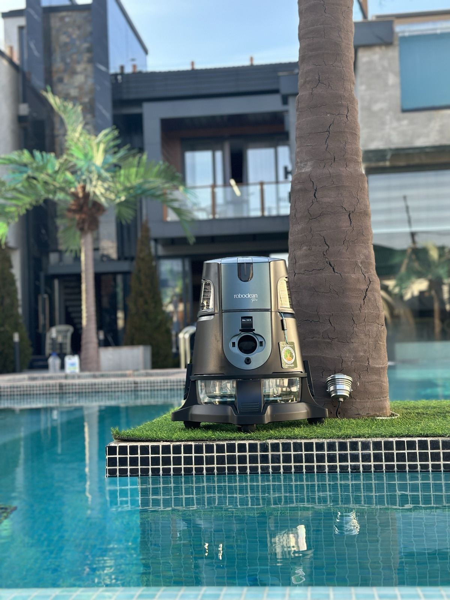
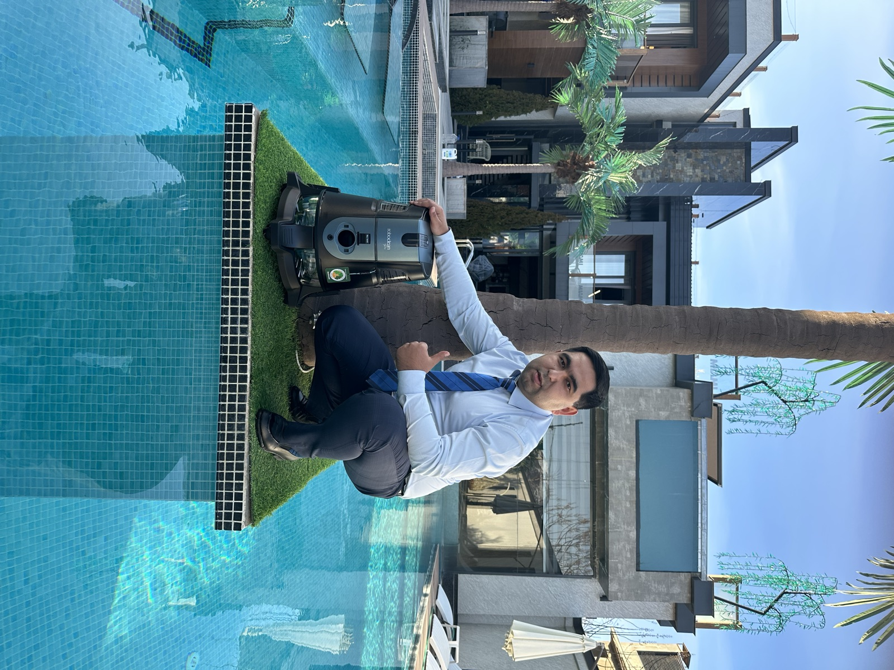

Suv filtri
Chang xaltasi ham, chang konteyneri ham yo‘q. Tozalab bo‘lgach suvni to‘kasiz — chang havoga uchmaydi.

Aura kompaniyasi menejeri · Toshkent
Isroil o‘zi qo‘ng‘iroq qilib, narxni aytadi. Bepul va majburiyatsiz.
Men Isroil, Aura kompaniyasi menejeriman. Aparatni to‘g‘ridan-to‘g‘ri kompaniyadan olasiz, narx ustamasiz. 3 yillik kafolat va ta’mir ham men bilan.

Aura kompaniyasi menejeriman, 7 yildan beri Roboclean bilan ishlayman. Aparat original, narx kompaniyaning o‘zida belgilangan.
Ofisimizni videoda ko‘ring.
Bozorda Roboclean turli sotuvchilardan turli narxda sotiladi. Original aparatni va servisni shu uchta savol ajratib beradi.
Men Aura kompaniyasi menejeriman. Aparat kompaniya narxida, ustamasiz beriladi.
Oddiy changyutgich katta changni yig‘adi, ammo eng mayda zarrachalar — chang, gul changi, mog‘or sporalari — havoga qaytib chiqishi mumkin.
Siz tozalab bo‘ldingiz, chang esa xonada muallaq qoladi.
Ularni bo‘shatganda chang yana havoga ko‘tariladi, ichida esa chang va mikroblar to‘planadi.
Xalta to‘lgan sari oddiy changyutgichning so‘rish kuchi kamayadi.
Farzandingiz gilamda erkin o‘ynasin — chang havoga emas, suvga tushadi.
Changga sezgir yaqinlaringiz uyda o‘zini yengil his qilsin, siz esa xotirjam bo‘ling.
Haqiqiy sinovlar — hech qanday montajsiz effektlarsiz. Demoda xuddi shunday sinovni sizning uyingizda ko‘rsataman.
Uch bosqich — va xonangizdagi havo toza.
Qurilma changni havo oqimi bilan birga tortadi.
Tez aylanuvchi separator changni suvga yo‘naltiradi — chang suvda qoladi.
HEPA filtrdan o‘tgan havo xonaga qaytadi.
Qo‘shimcha: suvga efir moyi qo‘shib, xonaga yoqimli hid berish mumkin.
Chang xaltasi ham, chang konteyneri ham yo‘q. Tozalab bo‘lgach suvni to‘kasiz — chang havoga uchmaydi.
Gul changi, mog‘or sporalari, bakteriyalar va yog‘li changni ushlab qolishga yordam beradi.
Xalta to‘lib borgani sari quvvat pasaymaydi.
Tozalashdan keyin idishdagi suvga qarang: chang shu yerda qoladi.
Suvga efir moyi qo‘shib, uyni yoqimli hid bilan to‘ldirish mumkin.
Gilam, yumshoq mebel, matras, yostiq, o‘yinchoqlar, silliq pollar va suyuqliklarni yig‘ish.
Bola yerda o‘ynaydi — pol va gilam toza bo‘lishi muhim.
Chang va gul changini uydan kamaytirishga yordam beradi.
Tuk va hid — gilam hamda mebeldan chuqur tozalanadi.
Gilam, divan, matras va yostiqlar uchun.
Qurilish yoki yo‘l yaqinida yashovchilar uchun.
Ha, to‘liq bepul va hech qanday majburiyatsiz.
Aparat Aura kompaniyasidan keladi, 3 yillik to‘liq kafolat hujjati bilan. Kompaniya hujjatlarini qo‘ng‘iroq paytida ham, uchrashuvda ham ko‘rsataman.
Narx kompaniyaning o‘zida belgilangan va ustama qo‘shilmaydi. Aniq narxni qo‘ng‘iroq paytida o‘zim aytaman.
Ha: 8, 16 yoki 24 oyga foizsiz (0%). Shartlarni qo‘ng‘iroq paytida tushuntiraman.
Sizga qulay vaqtda: ish kuni, kechqurun yoki dam olish kuni. Toshkent shahri va Toshkent viloyati bo‘ylab uyingizga kelaman.
Odatda taxminan 20–30 daqiqa.
Toshkent shahri va Toshkent viloyatida.
Tozalab bo‘lgach suvni to‘kib, idishni chayib qo‘yish kifoya.
Ha: 3 yillik to‘liq kafolat va 10 yil servis.
Yo‘q, changyutgich dori vositasi emas. U uydagi chang va allergenlarni kamaytirishga yordam beradi. Sog‘liq masalalarida shifokorga murojaat qiling.